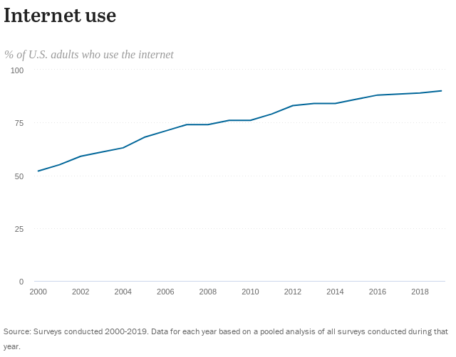

- For You
- Trending
- COVID-19
- News
- Sports
- Entertainment
-
Trending in Science Starship 55.5K Tweets
-
Sports Trending Joe Rogan 5,218 Tweets
-
Yesterday CNN's Cuomo conundrum: A star anchor with a brother in trouble
-
Covid-19 LIVE COVID-19: News and updates for Massachusetts
-
Yesterday Thinking about getting a booster? Read this first.

-
Trending in United States Wonder Bread 1,259 Tweets